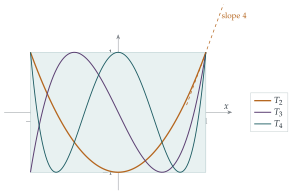

STEP I 1988, Question 7
Read the question before you go on. It is in the STEP Support Programme’s question database: step.maths.org/questions/88-s1-q7
The hook
If you know a function stays between \(-1\) and \(1\) on an interval, can you say anything about how steep it is? For a general function, no: \(\sin(1000x)\) stays between \(-1\) and \(1\) but has slopes as large as \(1000\). But a quadratic cannot wiggle like that. This question shows that a quadratic trapped in the box \(|x| \leq 1\), \(|y| \leq 1\) can never have slope bigger than \(4\) inside the box, and that \(4\) is the best possible.
The problem has a surprising origin. In 1887 the chemist Dmitri Mendeleev, famous for the periodic table, was studying how the density of a solution depends on its concentration, and fitting quadratics to his data. He needed to know how badly errors in the data could affect the slope of his curves, and he proved exactly the result in this question. Two years later the young Andrei Markov solved the general problem for polynomials of any degree, and the answer led straight to some of the most important polynomials in mathematics.
Before you start
The formula for \(\mathrm{f}'(x)\) uses only three values of \(\mathrm{f}\): at \(-1\), \(0\) and \(1\). Why should three values be enough to determine the derivative of a quadratic?
A quadratic has three coefficients, so it is determined by its values at any three points. So its derivative, which is another function of the coefficients, must be expressible in terms of those three values. The formula tells you how. And it is exactly what you need, because the hypothesis \(|\mathrm{f}(x)| \leq 1\) tells you about the values of \(\mathrm{f}\), while the conclusion is about its derivative.
Working it through
Stage 1 The formula
\(\mathrm{f}(1) = a + b + c\), \(\mathrm{f}(-1) = a - b + c\) and \(\mathrm{f}(0) = c\). So the right-hand side is \[(a + b + c)\left(x + \tfrac12\right) + (a - b + c)\left(x - \tfrac12\right) - 2cx.\] The coefficient of \(x\) is \((a + b + c) + (a - b + c) - 2c = 2a\), and the constant term is \(\frac12(a + b + c) - \frac12(a - b + c) = b\). So the right-hand side is \(2ax + b = \mathrm{f}'(x)\).■
Stage 2 The bound
Take absolute values in the formula and use the triangle inequality, together with \(|\mathrm{f}(1)|, |\mathrm{f}(-1)|, |\mathrm{f}(0)| \leq 1\). What bound on \(|\mathrm{f}'(x)|\) do you get, as a function of \(x\)?
By the triangle inequality \(|u + v + w| \leq |u| + |v| + |w|\), \[|\mathrm{f}'(x)| \leq |\mathrm{f}(1)|\,\bigl|x + \tfrac12\bigr| + |\mathrm{f}(-1)|\,\bigl|x - \tfrac12\bigr| + 2|\mathrm{f}(0)|\,|x| \leq \bigl|x + \tfrac12\bigr| + \bigl|x - \tfrac12\bigr| + 2|x|.\]
Show that \(\bigl|x + \tfrac12\bigr| + \bigl|x - \tfrac12\bigr| + 2|x| \leq 4\) for \(|x| \leq 1\). (Split into cases according to the signs.)
If \(|x| \leq \frac12\), then \(x + \frac12 \geq 0\) and \(x - \frac12 \leq 0\), so \(\bigl|x + \tfrac12\bigr| + \bigl|x - \tfrac12\bigr| = (x + \tfrac12) - (x - \tfrac12) = 1\), and the total is \(1 + 2|x| \leq 2\).
If \(\frac12 \leq |x| \leq 1\), both brackets have the same sign as \(x\), so \(\bigl|x + \tfrac12\bigr| + \bigl|x - \tfrac12\bigr| = 2|x|\), and the total is \(4|x| \leq 4\).
Either way \(|\mathrm{f}'(x)| \leq 4\).■
The bound is only achieved at \(x = \pm1\); in the middle half of the interval the slope is at most \(2\).
Stage 3 An extreme example
For the bound to be attained at \(x = 1\), every inequality in Stage 2 must be an equality. What values must \(\mathrm{f}(1)\), \(\mathrm{f}(-1)\) and \(\mathrm{f}(0)\) take, and with what signs?
At \(x = 1\), the formula is \(\mathrm{f}'(1) = \frac32\mathrm{f}(1) + \frac12\mathrm{f}(-1) - 2\mathrm{f}(0)\). To make this equal to \(4\) we need \(\mathrm{f}(1) = 1\), \(\mathrm{f}(-1) = 1\) and \(\mathrm{f}(0) = -1\). The quadratic through \((-1, 1)\), \((0, -1)\) and \((1, 1)\) is \[\mathrm{f}(x) = 2x^2 - 1,\] so \(a = 2\), \(b = 0\), \(c = -1\). On \(|x| \leq 1\), \(x^2 \in [0, 1]\), so \(2x^2 - 1 \in [-1, 1]\), and \(\mathrm{f}'(1) = 4\).■
Looking back
Express what you want in terms of what you know. The formula rewrote the derivative in terms of values of \(\mathrm{f}\), which is where the hypothesis gave information.
The triangle inequality. Bounding a sum by the sum of the absolute values is one of the most common moves in analysis.
Find the extremal case from the equality conditions. Asking when every inequality is tight produced the example \(2x^2 - 1\) directly.
What’s really going on
Andrei Markov proved in 1889 that if \(p\) is a polynomial of degree \(n\) with \(|p(x)| \leq 1\) on \([-1, 1]\), then \[|p'(x)| \leq n^2 \qquad\text{for } |x| \leq 1.\] For \(n = 2\) this is our bound of \(4\). The extreme cases are the Chebyshev polynomials \(T_n\), defined by \[T_n(\cos\theta) = \cos n\theta.\] For example \(\cos 2\theta = 2\cos^2\theta - 1\) gives \(T_2(x) = 2x^2 - 1\), our extreme quadratic, and \(\cos 3\theta = 4\cos^3\theta - 3\cos\theta\) gives \(T_3(x) = 4x^3 - 3x\). Because \(T_n(x) = \cos n\theta\), these polynomials oscillate between \(-1\) and \(1\) as often as a polynomial of degree \(n\) possibly can, and they are as steep as possible at the ends (Figure 3.6.1). Markov’s brother Vladimir extended the result to higher derivatives in 1892.

Interpolation
The formula in the question is a piece of Lagrange interpolation: given the values of a function at a few points, write down the unique polynomial of lowest degree through them, and use it to approximate the function or its derivative. Here the three points are \(-1, 0, 1\). Formulas like this are used everywhere in numerical analysis, for example to estimate derivatives from measured data. Markov’s inequality is the warning that comes with them: a small error in the values can be magnified by a factor of up to \(n^2\) in the derivative, which is exactly the issue Mendeleev was worried about.
Chebyshev polynomials in practice
Chebyshev polynomials are the workhorses of approximation theory. Interpolating a function at the roots of \(T_n\), rather than at equally spaced points, keeps the error under control; with equally spaced points, high-degree interpolation can go wildly wrong near the ends of the interval (Runge’s phenomenon). Software that evaluates functions to full machine precision, or solves differential equations very accurately, often works with Chebyshev expansions internally.
The thinking skill
If the hypothesis tells you about one kind of quantity and the conclusion is about another, look for an identity linking them, then bound term by term.
And when you have a bound, ask whether it is best possible. Following the equality cases backwards usually leads you to the extreme example, and the extreme example is often interesting in its own right.
Try this next
The general idea. Show that if \(\mathrm{f}\) is a quadratic then \(\mathrm{f}(x) = \mathrm{f}(-1)\dfrac{x(x-1)}{2} + \mathrm{f}(0)(1 - x^2) + \mathrm{f}(1)\dfrac{x(x+1)}{2}\), and differentiate to recover the formula in the question.
Uniqueness. harder Show that \(\pm(2x^2 - 1)\) are the only quadratics with \(|\mathrm{f}(x)| \leq 1\) on \([-1, 1]\) and \(|\mathrm{f}'(x)| = 4\) somewhere in \([-1, 1]\).
Chebyshev polynomials. Use \(\cos 3\theta = 4\cos^3\theta - 3\cos\theta\) to check that \(T_3(x) = 4x^3 - 3x\), and verify that \(T_3'(1) = 9\). Show that \(T_{n+1}(x) = 2xT_n(x) - T_{n-1}(x)\), and find \(T_4\).
Slopes of \(T_n\). By differentiating \(T_n(\cos\theta) = \cos n\theta\) with respect to \(\theta\), show that \(T_n'(\cos\theta) = \dfrac{n\sin n\theta}{\sin\theta}\), and deduce that \(T_n'(1) = n^2\) by letting \(\theta \to 0\).
Further reading
Lloyd N. Trefethen, Approximation Theory and Approximation Practice (SIAM). A beautiful modern book about Chebyshev polynomials and interpolation, readable by a strong school student, with computer experiments throughout.
Peter Borwein & Tamás Erdélyi, Polynomials and Polynomial Inequalities (Springer). For the full story of Markov’s inequality and its relatives. Advanced.
George M. Phillips, Interpolation and Approximation by Polynomials (Springer). An undergraduate text covering Lagrange interpolation, Chebyshev polynomials and Markov-type inequalities.